Enterprise Resource Planning
Internal handoff v1.0 / 21 Oktober 2026
Logo, tipografi dan palet semantik JP Atlas dalam satu paket offline.
PNG transparan 1498 x 421 px. Pertahankan rasio dan warna. Pada tema terang, gunakan bidang identitas gelap. Master vector resmi belum tersedia.
Regular 400 / Medium 500 / Semibold 600 / Emphasis 650
Page32px / section 20px / body 16px / table 14px / metadata 12px. Line-height isi1.5.
#071321
#F4F6FA
#0E1A24
#FFF
#162638
#EAF0F6
#F3F6FB
#122236
#B7C4D3
#4C6075
#34465A
#C7D2DF
#72869C
#697D92
#C8F904
#647D00
#B6B4FF
#5146C9
#252949
#EBE9FF
#E5E0FF
#3B3294
BerhasilPerlu perhatianGagalInformasi
Specimen visual. Gunakan label dan status, bukan warna saja.
Pasang Manrope dahulu, lalu buka SVG di editor vektor. Teks dan bentuk editable; logo asli tertanam sebagai PNG.